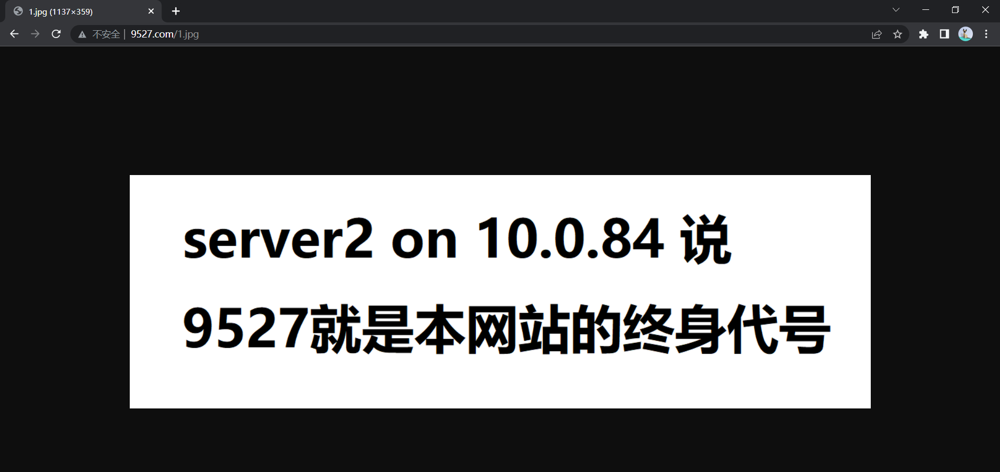

本文主要描述了搭建一个web架构的主要过程，含有包括提供静态资源的nginx服务器、处理php应用的php-fpm服务器、处理Java应用程序的Tomcat服务器、haproxy和nginx负载均衡与代理等详细配置。、
该架构目标是上线3个网站，www.9527.com、jsp.9527.com和blog.9527.com。www.9527.com具有html、js、图片等静态资源；jsp.9527.com网站提供jsp文件动态资源；blog.9527.com是基于WordPress的博客网站，需要php服务器，php服务器同时还处理www.9527.com的php请求。
为承担较高的并发访问和方便后续扩容，架构设计先由haproxy四层负载均衡调度到两台nginx代理服务器；nginx监听8080端口对tomcat作负载均衡，监听80端口对后端nginx服务器和php服务器作七层代理；数据库采用PXC集群并为nginx和php服务器创建账号并授权；tomcat使用msm管理memcache实现session共享；nginx和php服务器上的文件可设计为分布式存放（需要代理对用户请求uri作哈希），也可使用nfs共享文件；使用Keepalived实现haproxy高可用。
使用主机为一物理机上的13台虚拟机，受限于单机性能主机数量较少，每个集群精简至2台主机。
架构拓扑图如下
主机规划 以下采用CentOS8系统
haproxy主机两台：
10.0.0.87 主机名haproxy1 Keepalived节点1优先级100多播地址224.0.100.100
10.0.0.88 主机名haproxy2 Keepalived节点2优先级80多播地址224.0.100.100
nginx（代理）主机两台：
10.0.0.157 主机名nginxproxy1
10.0.0.150 主机名nginxproxy2
nginx（静态资源）主机两台：
10.0.0.83 主机名nginx-server1
10.0.0.84 主机名nginx-server2
php+nginx主机两台：
10.0.0.85 主机名php-server1
10.0.0.86 主机名php-server2
tomcat主机两台：
10.0.0.108 主机名tomcat1
10.0.0.118 主机名tomcat2
nfs主机1台：
10.0.0.89 主机名nfs-server
以下采用CentOS7系统
PXC集群数据库主机两台：
10.0.0.154 主机名mysql1
10.0.0.155 主机名mysql2
环境准备 nginx安装 nginx代理和后端所用版本相同。未来若后端需要额外模块可编译安装再平滑升级。
配置nginx官方yum源，配置后默认安装最新稳定版1.22。本次选择版本为nginx-1.18.0
1 2 3 4 5 6 7 8 9 10 11 12 13 14 15 16 17 18 19 20 21 22 [nginx-stable]
php安装 架构中nginx异构代理，使用fastcgi协议。
使用阿里云appstream源
1 2 3 4 5 6 7 8 # 直接使用yum安装php-fpm及相关包
haproxy安装 使用阿里云appstream源中的版本
1 2 3 4 5 [root@haproxy1 ~]#yum info haproxy
Keepalived安装 使用阿里云appstream源安装
1 2 3 4 5 6 [root@haproxy2 ~]#yum info keepalived
tomcat安装 注意tomcat需要java环境，采用openjdk1.8
选择tomcat版本为tomcat-8/v8.5.82。从清华tomcat镜像站点下载
1 2 3 4 5 6 7 8 9 10 11 12 13 14 15 16 17 18 19 20 21 22 23 24 25 26 27 28 29 30 31 # 安装java环境相关包 # 下载tomcat # 指明java路径（新建tomcat.conf文件） # 添加PATH变量 # 添加service文件 # 加载后可通过systemd管理tomcat # tomcat进程将以root身份运行，未来考虑安全因素可专门为tomcat进程创建专属账号，修改service文件和tomcat相关文件所属者即可。
Percona XtraDB Cluster 安装 需要先配置yum仓库
1 2 3 4 5 6 [percona]
然后直接安装即可
1 yum -y install Percona-XtraDB-Cluster-57
nfs服务器安装 1 2 3 4 5 6 7 8 # 使用yum安装，版本如下 # 进程名为nfs-server.service
memcache及msm（memcached session manager）安装 参考github上的指引下载msm所需jar包，网址如下
https://github.com/magro/memcached-session-manager/wiki/SetupAndConfiguration
1 2 3 4 5 6 7 8 9 10 11 12 13 14 15 16 17 18 19 20 # memcached直接安装阿里云appstream源中版本 # msm网页中提及所需jar包如下，下载后放入 /安装目录/tomcat/lib/下即可
nginx静态资源服务器配置 涉及主机：代理10.0.0.150和10.0.0.157、后端10.0.0.83和10.0.0.84
nginx后端配置 nginx性能优化相关配置省略，未改动配置省略
1 2 3 4 5 6 7 8 9 10 11 12 13 14 15 16 17 18 19 20 21 22 23 24 # 两主机以下配置相同 # 主配置文件 # # 图片和网页源码存放在不同目录
nginx代理配置 两主机配置相同，为测试方便，调度使用默认的轮询算法
1 2 3 4 5 6 7 8 9 10 11 12 13 14 15 16 17 18 19 20 21 22 23 # 主配置文件 # 子配置文件 # 定义虚拟主机，将静态资源请求调度到后端nginx集群
准备测试文件 1 2 3 4 5 6 7 8 9 10 11 12 13 14 15 # 两台主机在相同文件夹下准备文件名相同内容不同的文件
测试 Linux或windows上作测试均可，均可修改域名解析文件通过域名访问，以下为示例。
测试10.0.0.157无误后改为10.0.0.150测试另一代理是否配置正确。
1 2 3 4 5 6 7 8 # linux # windows修改C:\Windows\System32\drivers\etc\hosts,添加一行
linux
Windows

PHP服务器配置 涉及主机：代理10.0.0.150和10.0.0.157、后端10.0.0.85和10.0.0.86
后端两主机安装nginx、php负责blog.9527.com的访问，nginx接收http请求转发到本机的php来处理。同时，还处理www.9527.com的php请求，由nginx代理直接代理到9000端口，不经过本机nginx代理。
php配置 修改监听配置
1 2 3 4 # 仅修改以下行
本机nginx配置 1 2 3 4 5 6 7 8 9 10 11 12 13 14 15 16 http
nginx代理配置 Nginx基于模块ngx_http_fastcgi_module实现fastcgi协议转发，yum安装已有。
测试时发现有时一些php网页依然会按照上文static.conf中规则调度，为了解决该问题，主配置文件中添加以下配置。两主机配置相同。
1 2 3 4 5 6 7 8 9 10 11 12 # 主配置文件/etc/nginx/nginx.conf
之前的static.conf也要配置fastcgi转发，博客网站的php请求转发在本机上已配置。
1 2 3 4 5 6 7 8 9 10 11 12 13 14 15 16 17 18 19 20 21 22 23 24 25 26 27 28 29 30 31 32 33 34 35 36 37 38 39 40 41 42 43 # 子配置文件/etc/nginx/conf.d/php.conf # 子配置文件/etc/nginx/conf.d/static.conf # 定义虚拟主机，将静态资源请求调度到后端nginx集群
准备测试文件 注意路径需要与nginx配置中指定的路径一致
1 2 3 4 5 6 7 8 9 10 [root@php-server2 ~]#cat /data/php/www/index.php
测试 Linux或windows上作测试均可，均可修改域名解析文件通过域名访问。
测试10.0.0.157无误后改为10.0.0.150测试另一代理是否配置正确。
linux
Windows
此时可在该文件夹下部署WordPress
安装WordPress 可直接去wordpress官网下载，将wordpress包解压到php目录下。浏览器访问wordpress文件夹将开始初始化安装。
选择任意数据库，如果数据库做了负载均衡，可填写代理主机地址。
出现该提示，到wordpress文件夹下创建配置文件即可，复制网页中的内容。
Tomcat服务器配置 涉及主机：后端Tomcat10.0.0.108、10.0.0.118和代理nginx10.0.0.150和10.0.0.157
后端Tomcat服务器监听8080端口，nginx代理将http请求转到本机8080端口再由tcp协议转发Tomcat处理。
Tomcat配置 主配置文件 /安装路径/tomcat/conf/server.xml
其中绝大多数采用默认配置，监听默认的8080端口
1 2 3 4 5 6 7 8 在结尾hostq前添加两行</Host > <Host name ="jsp.9527.com" appBase ="/data/webapps1" > </Host > <Engine name ="Catalina" defaultHost ="jsp.9527.com" jvmRoute ="Tomcat1" >
msm配置（session共享） 配置文件位置 /安装路径/tomcat/conf/context.xml
参考指引网页配置https://github.com/magro/memcached-session-manager/wiki/SetupAndConfiguration#configure-memcached-session-manager-as--context-manager
1 2 3 4 5 6 7 8 9 10 11 12 13 14 Tomcat1配置，添加以下行。session默认存在另一主机memcached上，损坏后才存在本机的memcached<Manager className ="de.javakaffee.web.msm.MemcachedBackupSessionManager" memcachedNodes ="n1:10.0.0.108:11211,n2:10.0.0.118:11211" failoverNodes ="n1" requestUriIgnorePattern =".*\.(ico|png|gif|jpg|css|js)$" transcoderFactoryClass ="de.javakaffee.web.msm.serializer.kryo.KryoTranscoderFactory" /> <Manager className ="de.javakaffee.web.msm.MemcachedBackupSessionManager" memcachedNodes ="n1:10.0.0.108:11211,n2:10.0.0.118:11211" failoverNodes ="n2" requestUriIgnorePattern =".*\.(ico|png|gif|jpg|css|js)$" transcoderFactoryClass ="de.javakaffee.web.msm.serializer.kryo.KryoTranscoderFactory" />
memcached配置 两主机相同修改/etc/sysconfig/memcached
1 2 # 注释该行 # OPTIONS="-l 127.0.0.1,::1"
nginx代理配置 主配置文件与php部分配置类似，添加端口转发
1 2 3 4 5 6 7 8 9 10 11 12 13 # /etc/nginx/nginx.conf
子配置文件如下，对Tomcat作四层负载均衡
1 2 3 4 5 6 7 8 9 10 11 # /etc/nginx/conf.d/tom1.conf
准备测试文件 两主机文件一致
1 2 3 4 5 6 7 8 9 10 11 12 13 14 15 16 [root@tomcat1 /usr/local]#cat tomcat/webapps/app1/2.jsp
测试 Linux或windows上作测试均可，均可修改域名解析文件通过域名访问。
测试10.0.0.157无误后改为10.0.0.150测试另一代理是否配置正确。
linux
curl毕竟不是真正的浏览器，可以看到sessionid不一致，会话丢失
Windows
实现会话保持（sessionid一致）
NFS配置 nfs服务器为10.0.0.89，仅需设置共享目录
1 2 3 4 5 # 建立共享目录 # 写入配置文件，no_root_squash可以保证其他主机的root可以修改，可以指定网段或某IP
使用共享文件夹
1 2 3 4 5 6 7 # 挂载该文件夹即可，可以写入/etc/fstab持久自动挂载 # 以该服务器为例,加上_netdev参数在开机后网络通畅后挂载 # 可用mount -a立即生效
测试 1 2 3 4 5 6 7 [root@nfs-server ~]#touch /data/nginx/9527/9527
PXC集群 涉及主机：数据库集群10.0.0.154、10.0.0.155。
直接使用过去文章中搭建的PXC多主架构，该文章已详细展示配置过程，此处不再赘述。
https://gituserusegit.github.io/2022/07/26/PXC%E9%9B%86%E7%BE%A4%E6%90%AD%E5%BB%BA/
完成PXC集群搭建后，为后端服务器创建数据库和账号，然后授权。
1 2 3 4 5 6 mysql> create user 'nginxadm'@'10.0.0.%' identified by '123456';
haproxy配置 haproxy主机：10.0.0.87和10.0.0.88。Keepalived设置VIP为10.0.0.100/24
haproxy1：10.0.0.87工作 haproxy2：10.0.0.88备用
两主机配置一致
1 2 3 4 5 6 7 8 9 10 11 12 13 # 在最后添加以下几行 # 考虑客户端访问网站采用http协议，监听80端口 # nginx接收到的php请求会从80转到自己的81端口，从而使用php.conf子配置文件规则调度；jsp请求则从80转到自己的8080端口并使用tom1.conf子配置文件规则调度 # 使用static-rr是为了测试方便
测试 Linux或windows上作测试均可，均可修改域名解析文件通过域名访问。
测试10.0.0.87无误后改为10.0.0.88测试另一代理是否配置正确。
应实现www.9527.com blog.9527.com jsp.9527.com的资源均可访问，且正确的结果应该如上文的测试结果一致。
Keepalived配置 解决haproxy单点失败问题，10.0.0.87为主（优先级100）,10.0.0.88为从（优先级80）
1 2 3 4 5 6 7 8 9 10 11 12 13 14 15 16 17 18 19 20 21 22 23 24 25 26 27 28 29 30 31 32 33 34 35 36 37 38 39 40 41 42 43 44 45 46 47 48 49 50 51 52 53 54 55 56 57 58 59 60 61 62 63 64 65 66 67 68 69 70 # 首先启用内核参数并立即生效 # 以上为报警邮件的设置 # 健康性检查脚本设置，脚本名为check_haproxy，间隔1s执行/etc/keepalived/check_haproxy.sh检测，判定haproxy不能提供服务后本节点优先度-30 # 虚拟路由配置 # 虚拟IP # 调用脚本进行通知（发邮件） # 调用上方定义的健康性检查脚本 # 另一节点配置绝大多数相同，以下为不同的行
上述配置中提及的脚本 1 2 3 4 5 6 7 8 9 10 11 12 13 14 15 16 17 18 19 20 21 22 23 24 25 26 27 28 29 [root@haproxy2 ~]#cat /etc/keepalived/notify.sh# !/bin/bash # contact='9527@163.com' # !/bin/bash
测试 Linux或windows上作测试均可，均可修改域名解析文件通过域名访问。
修改域名对应IP为VIP，即10.0.0.100。
应实现www.9527.com blog.9527.com jsp.9527.com的资源均可访问，且正确的结果应该如上文的测试结果一致。
以下为测试haproxy高可用，一节点故障后是否影响访问
1 2 3 4 5 6 7 8 9 10 11 12 13 14 15 16 17 18 19 20 21 22 23 24 25 26 27 28 29 30 31 32 33 34 35 36 37 38 39 40 41 42 43 44 45 46 47 48 49 # 目前节点1工作，VIP在该主机上 # 抓包分析 # 模拟haproxy进程故障 # 可以看到该Keepalived节点优先级下降，另一节点发现自己优先级更高后上线 # VIP漂到了另一节点 # 完成切换后客户端访问不受影响则配置无误
总结 完成以上配置并测试无误后，已成功搭建了一个完整的web架构。
本架构比较简单，适合整体学习以上涉及的服务如何互相配合，未来可进一步优化和拓展。未来可拓展为以下更贴近真实的架构，也是本人学习的方向。

.jpg)